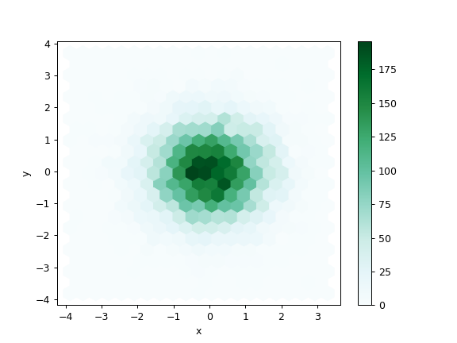
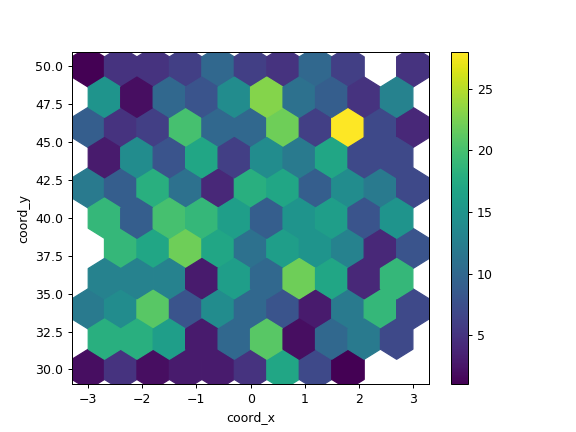

pandas.DataFrame.plot.hexbin¶
-
DataFrame.plot.hexbin(x, y, C=None, reduce_C_function=None, gridsize=None, **kwds)[source]¶ Generate a hexagonal binning plot.
Generate a hexagonal binning plot of x versus y. If C is None (the default), this is a histogram of the number of occurrences of the observations at
(x[i], y[i]).If C is specified, specifies values at given coordinates
(x[i], y[i]). These values are accumulated for each hexagonal bin and then reduced according to reduce_C_function, having as default the NumPy’s mean function (numpy.mean()). (If C is specified, it must also be a 1-D sequence of the same length as x and y, or a column label.)Parameters: - x : int or str
The column label or position for x points.
- y : int or str
The column label or position for y points.
- C : int or str, optional
The column label or position for the value of (x, y) point.
- reduce_C_function : callable, default np.mean
Function of one argument that reduces all the values in a bin to a single number (e.g. np.mean, np.max, np.sum, np.std).
- gridsize : int or tuple of (int, int), default 100
The number of hexagons in the x-direction. The corresponding number of hexagons in the y-direction is chosen in a way that the hexagons are approximately regular. Alternatively, gridsize can be a tuple with two elements specifying the number of hexagons in the x-direction and the y-direction.
- **kwds
Additional keyword arguments are documented in
pandas.DataFrame.plot().
Returns: - matplotlib.AxesSubplot
The matplotlib
Axeson which the hexbin is plotted.
See also
DataFrame.plot- Make plots of a DataFrame.
matplotlib.pyplot.hexbin- Hexagonal binning plot using matplotlib, the matplotlib function that is used under the hood.
Examples
The following examples are generated with random data from a normal distribution.
>>> n = 10000 >>> df = pd.DataFrame({'x': np.random.randn(n), ... 'y': np.random.randn(n)}) >>> ax = df.plot.hexbin(x='x', y='y', gridsize=20)
The next example uses C and np.sum as reduce_C_function. Note that ‘observations’ values ranges from 1 to 5 but the result plot shows values up to more than 25. This is because of the reduce_C_function.
>>> n = 500 >>> df = pd.DataFrame({ ... 'coord_x': np.random.uniform(-3, 3, size=n), ... 'coord_y': np.random.uniform(30, 50, size=n), ... 'observations': np.random.randint(1,5, size=n) ... }) >>> ax = df.plot.hexbin(x='coord_x', ... y='coord_y', ... C='observations', ... reduce_C_function=np.sum, ... gridsize=10, ... cmap="viridis")
